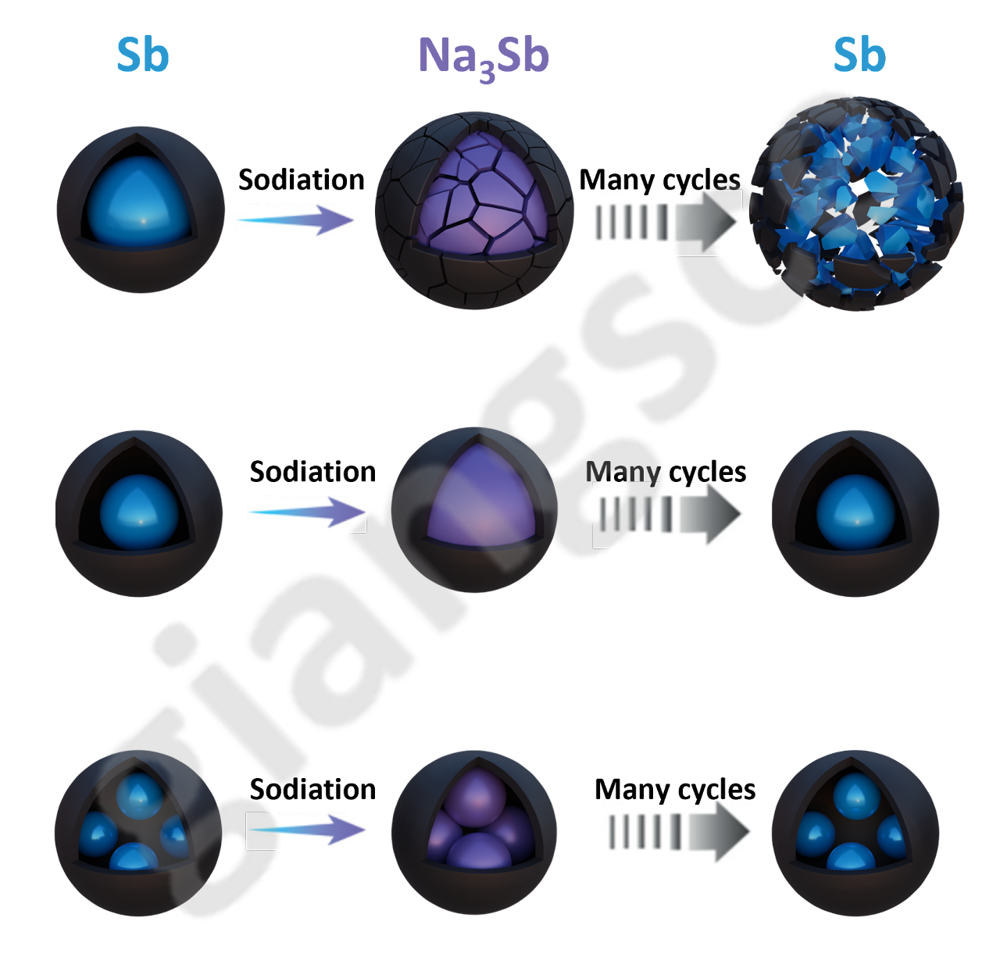
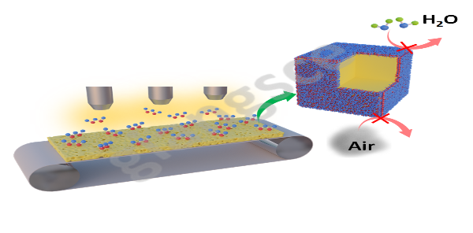
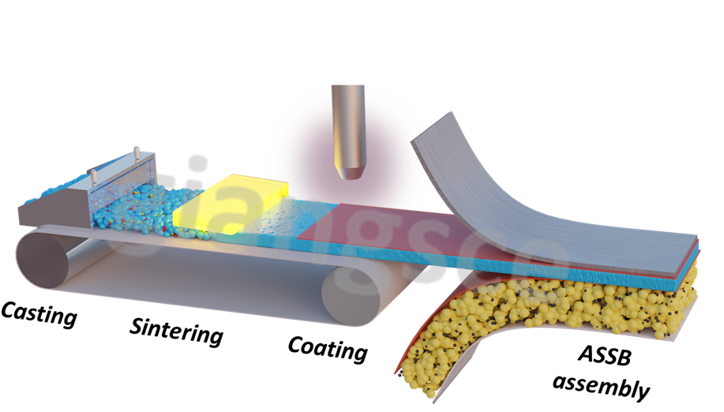
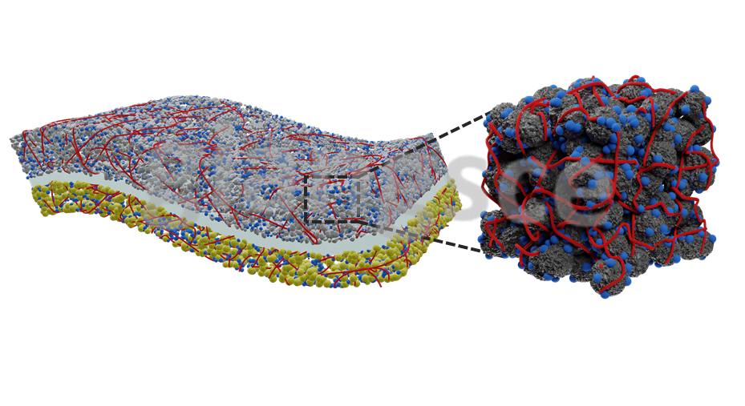
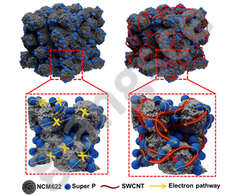
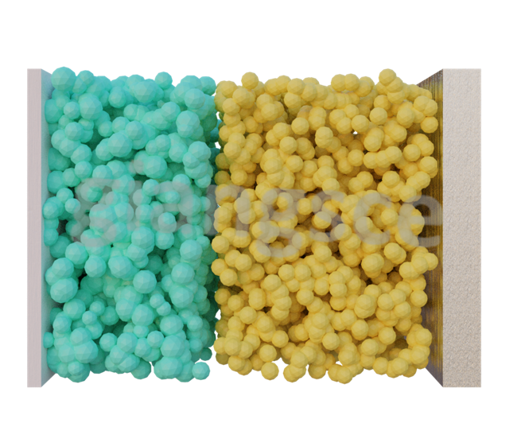
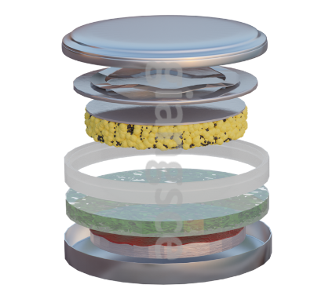
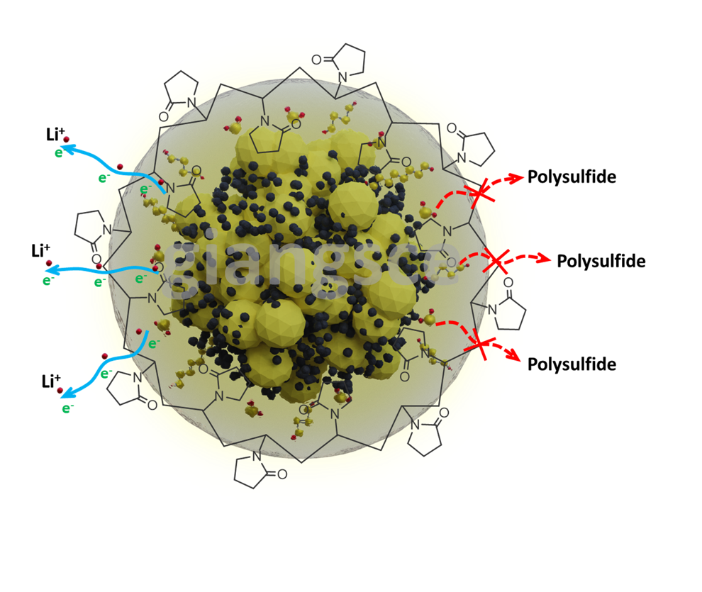
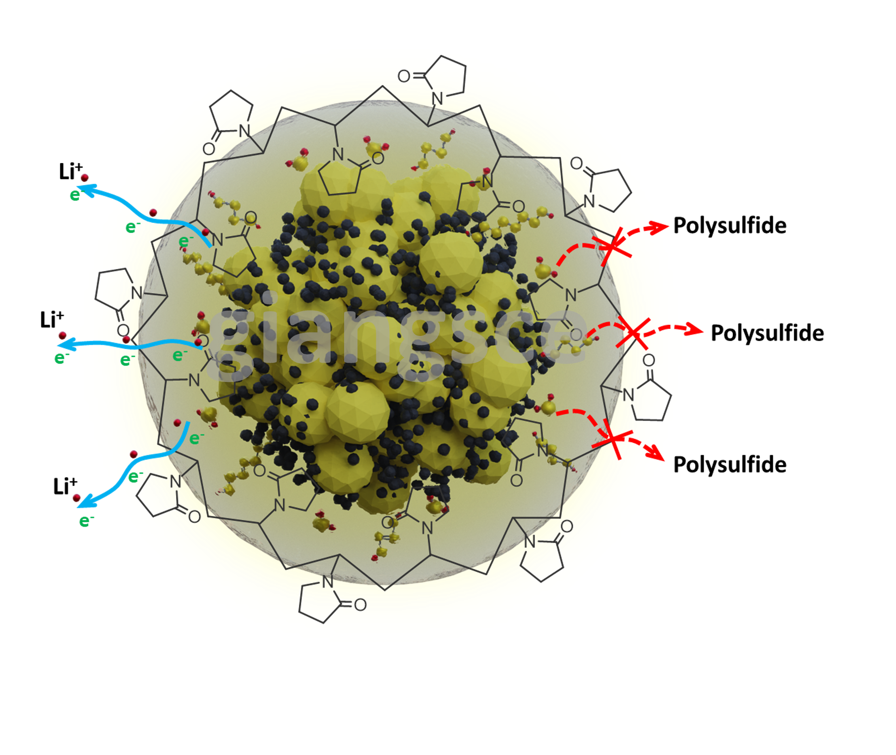
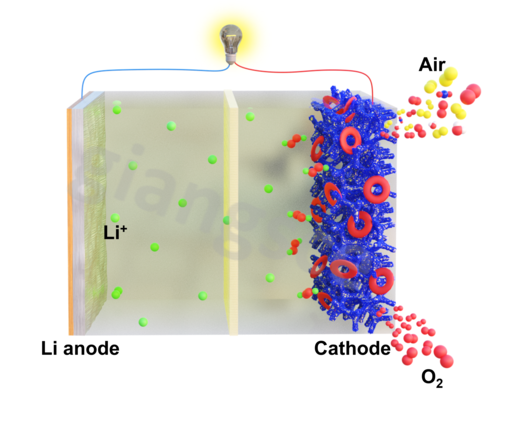

01
Advanced Electrode Materials
Design of high-performance anode and cathode materials for rechargeable batteries — alloying anodes (Sb, Sn, Ge–P), conversion materials, nanoporous carbon composites, and doped layered-oxide cathodes.
Research
We bridge fundamental understanding of materials and electrochemical processes with practical solutions for next-generation batteries.
Design of high-performance anode and cathode materials for rechargeable batteries — alloying anodes (Sb, Sn, Ge–P), conversion materials, nanoporous carbon composites, and doped layered-oxide cathodes.

Development of advanced sodium-, potassium-, sulfur-, and emerging battery technologies for high-energy and high-power applications.

Development of solid, polymer, and composite electrolytes for safer and high-performance batteries, including in situ polymerized and ceramic-framework composite solid electrolytes.

Development of recycling, regeneration, and upcycling strategies for sustainable and circular battery technologies — turning spent batteries and plastic waste into functional materials.














